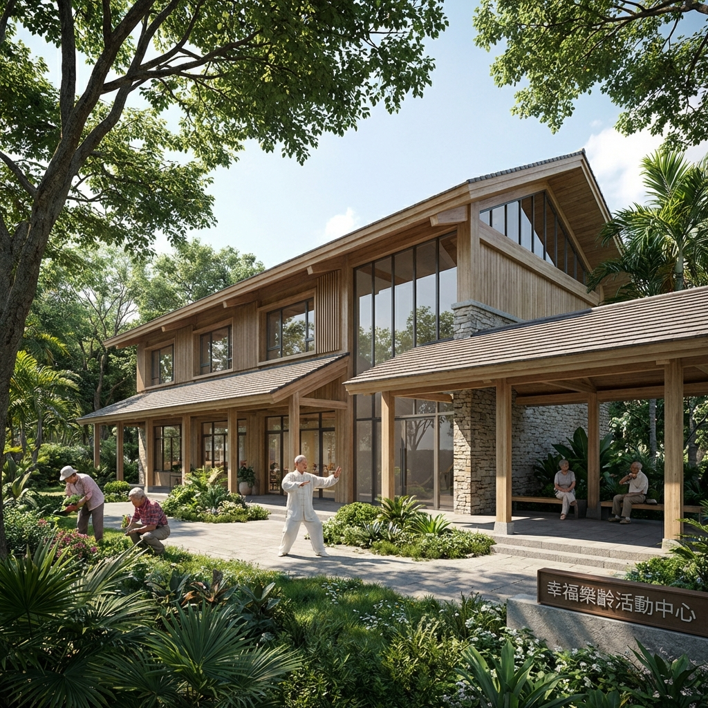
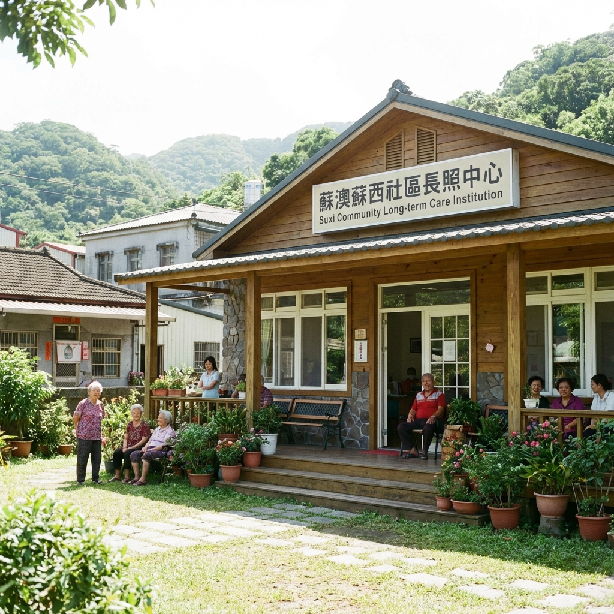
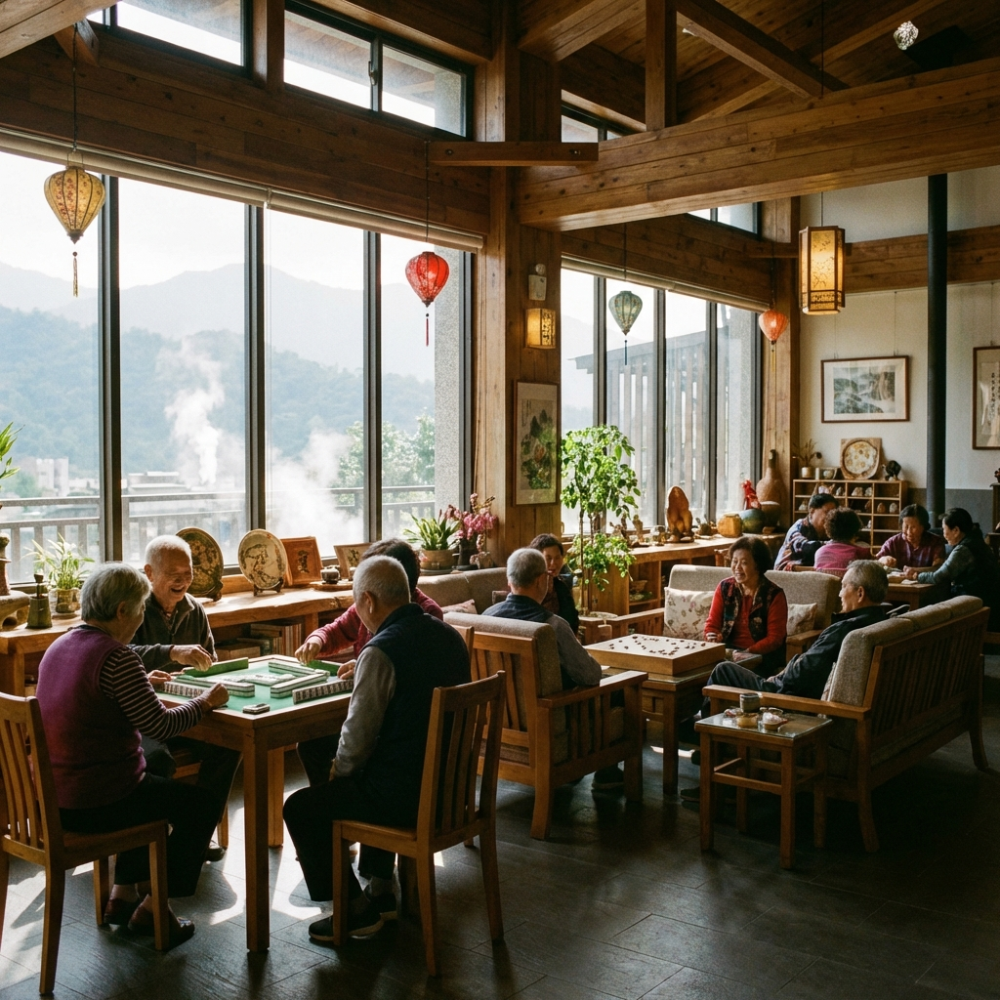
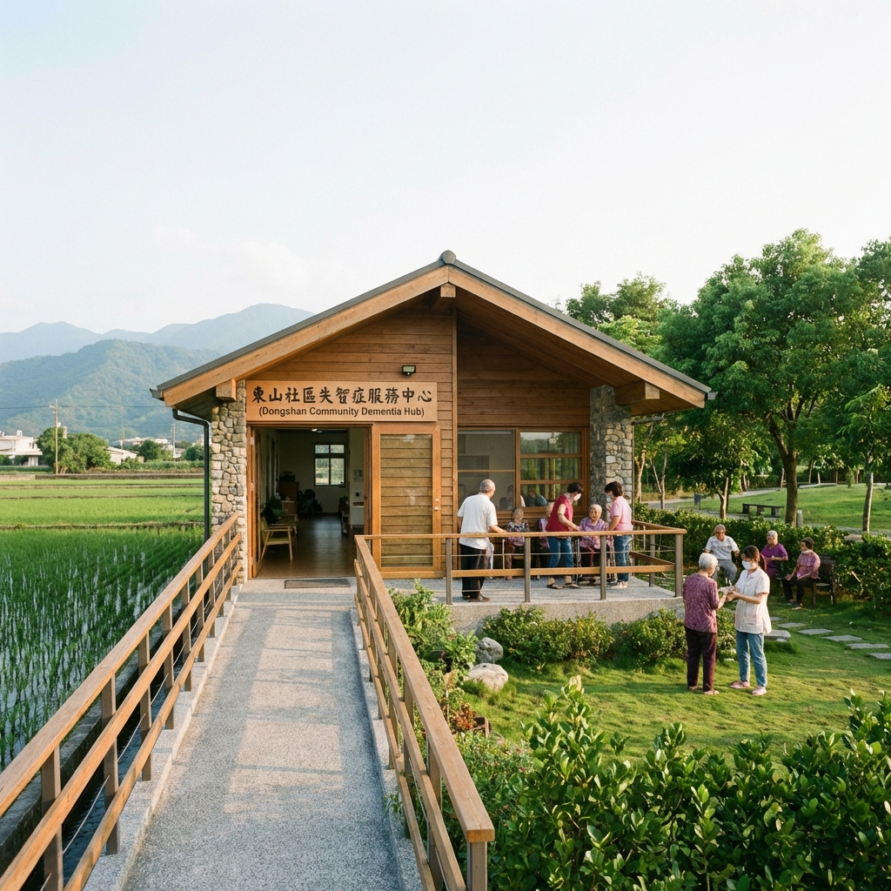
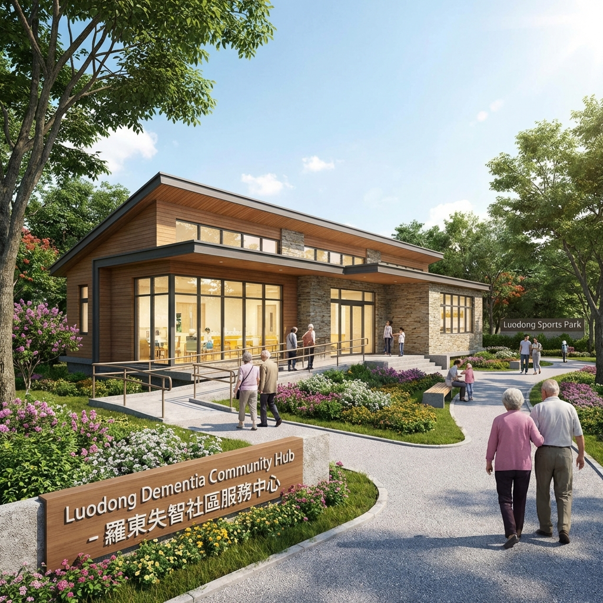
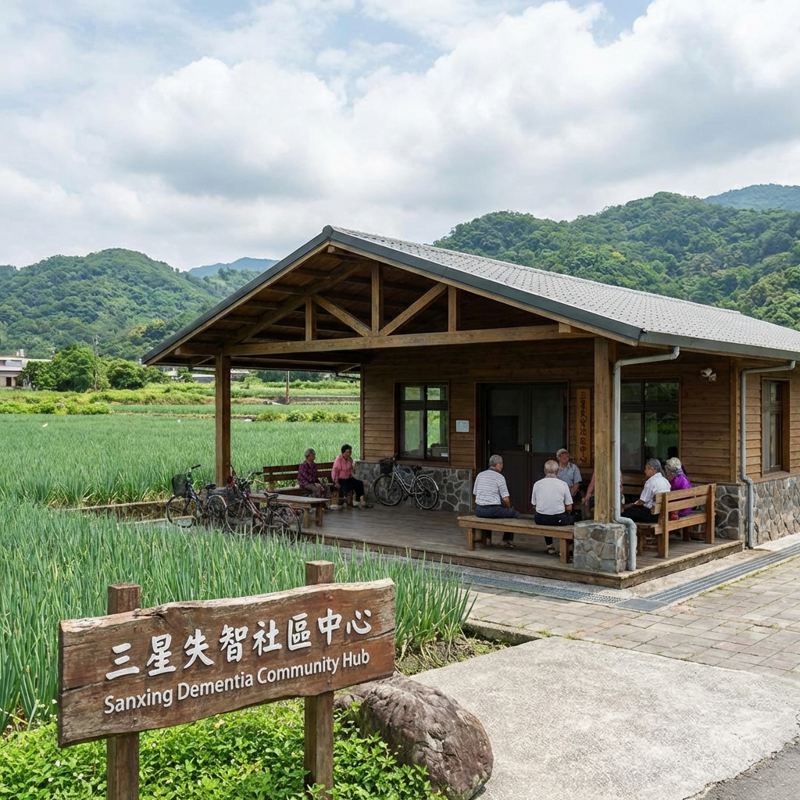
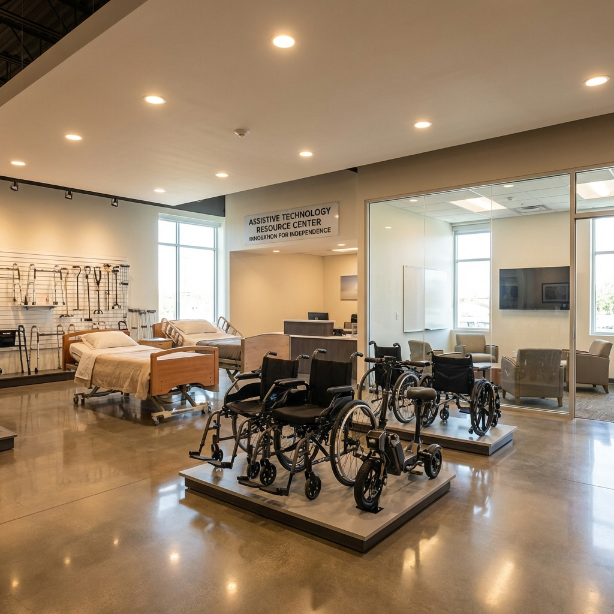

宜蘭縣有哪些長照服務可以申請？
社團法人宜蘭縣長期照護及社會福祉推廣協會（長福會）提供三大核心服務：(1) 長者日間照顧服務，於冬山、蘇澳等地設有日照中心；(2) 失智社區服務據點（樂智據點），於礁溪、冬山、羅東、三星設有據點；(3) 宜蘭縣溪北輔具資源中心，提供輔具諮詢、評估、借用、維修等一站式服務。服務專線：03-958-1020。 資料來源：長福會服務說明。
長福會提供三類服務：冬山與蘇澳的日間照顧、礁溪／冬山／羅東／三星的失智社區服務據點，以及宜蘭市的輔具資源服務。各服務的內容與據點可查閱長福會核心業務說明。
長福會服務諮詢專線為 03-958-1020，聯絡地址為宜蘭縣冬山鄉八寶路25號。服務安排請先洽詢，完整資訊見長福會聯絡頁面。
宜蘭縣溪北輔具資源中心位於宜蘭市聖後街141號，提供輔具諮詢、評估、借用與維修；專線為 03-9320920。資料來源：宜蘭縣溪北輔具資源中心官網。
資料整理：長福會網站｜。最新服務安排以各據點公告為準。
查看常見問題與解答我們提供多元的長期照顧服務，滿足長者與家庭的不同需求
本會於礁溪、冬山、羅東及三星設置失智社區服務據點（樂智據點），提供在地化之失智照護與支持服務，協助長者維持生活功能。
我們在宜蘭縣各鄉鎮設有服務據點，提供在地化的照顧服務







社團法人宜蘭縣長期照護及社會福祉推廣協會（長福會）提供三大核心服務：(1) 長者日間照顧服務，於冬山、蘇澳等地設有日照中心；(2) 失智社區服務據點（樂智據點），於礁溪、冬山、羅東、三星設有據點；(3) 宜蘭縣溪北輔具資源中心，提供輔具諮詢、評估、借用、維修等一站式服務。服務專線：03-958-1020。 資料來源：長福會服務說明。
請撥打長福會服務專線 03-958-1020，說明長者的照顧需求與所在地，洽詢冬山八寶或蘇澳蘇西日照據點。實際收案、服務安排及費用請向據點確認。 資料來源：長福會服務說明。
長福會於宜蘭縣礁溪、冬山、羅東及三星設有失智社區服務據點（樂智據點），提供認知功能促進活動、預防及延緩失能課程、共餐與社會參與活動、照顧者支持團體及照顧者訓練課程，服務對象為輕度失智長者及其家庭照顧者。 資料來源：長福會服務說明。
宜蘭縣溪北輔具資源中心提供輔具諮詢、評估、借用、維修及適配等服務。中心位於宜蘭縣宜蘭市聖後街141號，電話 03-9320920；服務時間為週一至週五 08:00-12:00、13:00-17:00，週三夜間 17:30-19:30 採預約制。辦理方式與最新公告請見中心官網。 資料來源：宜蘭縣溪北輔具資源中心。
社團法人宜蘭縣長期照護及社會福祉推廣協會（長福會）地址為宜蘭縣冬山鄉八寶路25號，電話03-958-1020，服務時間為週一至週五08:00-17:00。也可透過官網 www.changfu.me 的線上諮詢表單聯繫我們。 資料來源：長福會聯絡資訊。